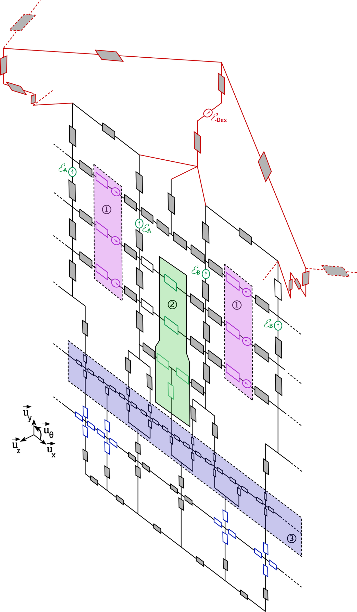

Demonstrateur
CTAF 1 kW et 5 kW
Demonstrateurs de machines synchones fractionnees et sectorisees commandes par plusieurs onduleurs.
- 1 kW - 3 onduleurs
- 5 kW - 12 onduleurs
- Machine de charge associee